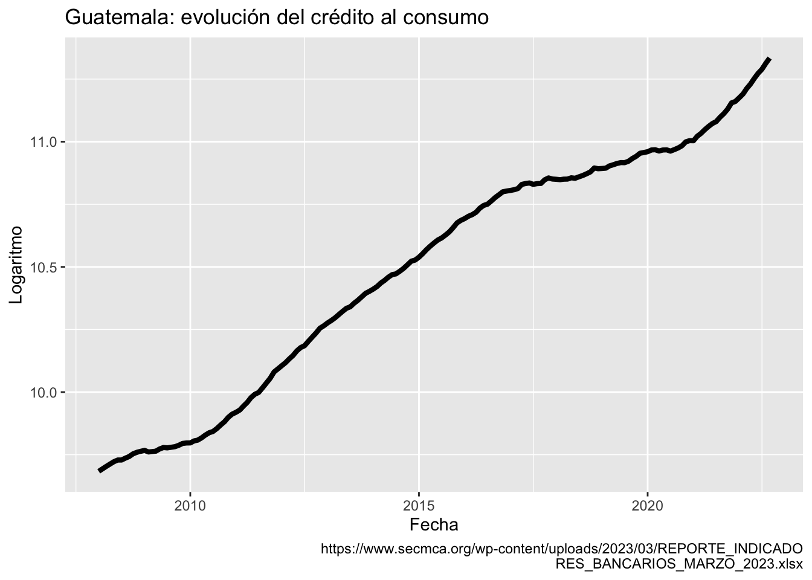
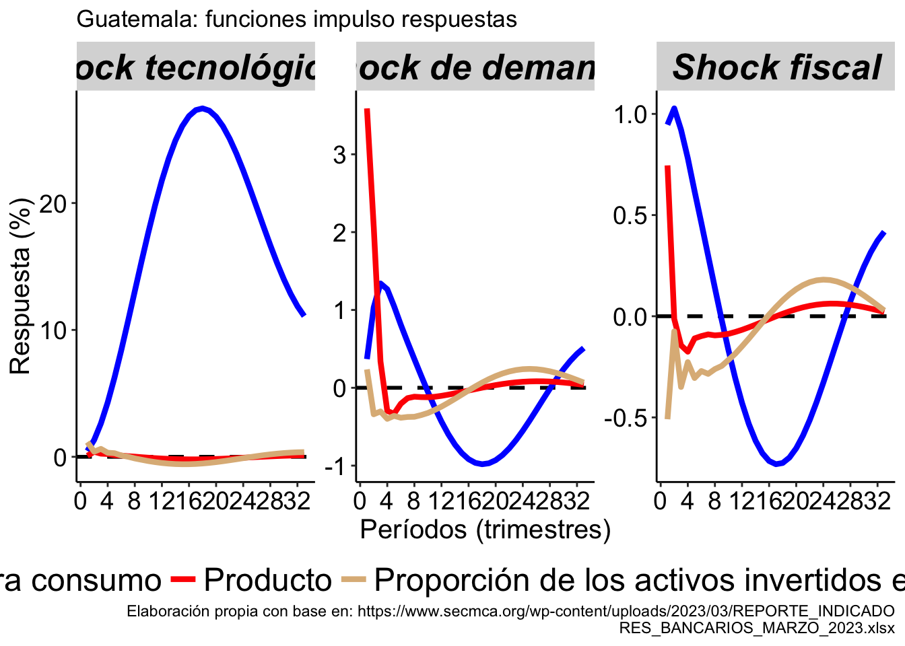

Blanchard-Quah ortogonalización (restricciones) sobre C(1)
Al observar la evolución del crédito hacia consumo provisto por el sistema bancario guatemalteco y disponible en @SECMCADATOS, se observa una series con una tendendencia estocástica.
library("zoo")library("xts")library(dplyr)library(ggplot2)library(kableExtra)library(xtable)library(tidyr)library(quantmod)library(RColorBrewer)library(gridExtra)#CARGAMOS DATOS MENSUALESDATA_MES<-as.xts(read.zoo("GT_MES.csv", index.column =1,sep =";", header=TRUE, format ="%Y-%m-%d"))CREDITO<-DATA_MES$CREDCREDITO<-data.frame(date=index(CREDITO), coredata(CREDITO))CREDITO<-filter(CREDITO, date >="2008-01-01")colnames(CREDITO)<-c("date","CREDITO")CREDITO<-mutate(CREDITO, CONSUMO=log(CREDITO))G<-ggplot(CREDITO, aes(x=date, y=CONSUMO))G<-G+labs(y="Logaritmo",x="Fecha", title ="Guatemala: evolución del crédito al consumo",caption ="https://www.secmca.org/wp-content/uploads/2023/03/REPORTE_INDICADORES_BANCARIOS_MARZO_2023.xlsx")+geom_line(size=1.5)G

El proceso de generación de la serie del crédito al consumo puede explicarse a través de la identificación de diferentes innovaciones. Una de ellas, las llamaré tecnológicas (en general uso ese término para referir los factores que pueden producir una mayor inclusión financiera independientemente si es producto de políticas o nuevas tecnologías), la segunda las de denanda y la tercera de absorción fiscal.
Para este ejercicio de identificación sigo la metodología propuesta por @BLANCHARD88 y estimo la forma reducida de un Vector Autorregresivo integrado por la tasa de crecimiento de la cartera de consumo nominal (\(\Delta c_{t}\)), la tasa de crecimiento del PIB (\(\Delta y_{t}\)) y el porcentaje de los activos de los sistemas bancarios en títulos y valores públicos (\(\Delta y_{t}\)). La representación de este VAR como un proceso de media móviles está dado por:
Considero \(A(0)=I\) y \(\Sigma_e=E(e e^{\tau})\) como la matriz de varianza y covarianza de la forma reducida del VAR mostrado en \(\ref{e1}\). Y supongo, primero que el crédito hacia consumo, la actividad económica y la exposición del sistema bancario hacia valores del gobierno son producidos a través de tres procesos estructurales independientes con shocks de varianza unitaria. Y segundo, que uno de esos procesos, el de las innovaciones tecnológicas, es el responsable de la tendencia estocástica observada en el crédito para consumo. Con base en lo anterior defino un VAR estructural cuya representación como un proceso de medias móviles es el siguiente:
Siendo \(\Sigma_{\epsilon}=E(\epsilon \epsilon^{\tau})=I\) la matriz de varianza y covarianza de los shocks estructurales, los cuales son independientes y con varianza unitaria, y \(C_{1,2}(1)=C_{1,3}(1)=0\), indicando que el shock de demanda y fiscal sobre las variables tasa de crecimiento del PIB y porcentaje de activos invertidos en valores soberanos, en su orden, no tienen efectos de largo plazo en el crédito nominal para consumo.
El proceso y resultado de la estimación es el siguiente:
CRED <-DATA_MES$CREDFISCAL <-DATA_MES$PUBCRED <-CRED["2008-01-01/2022-09-01"]ep1 <-endpoints(CRED , on ="quarters")CRED <-period.apply(CRED , INDEX = ep1, FUN = sum)DCRED <-diff(100*log(CRED ), lag=4)FISCAL <-FISCAL["2008-01-01/2022-09-01"]ep2 <-endpoints(FISCAL , on ="quarters")TASA <-period.apply(FISCAL, INDEX = ep2, FUN = max)DATA_TRIM <-as.xts(read.zoo("TRIM_GT.csv", index.column =1,sep =";", header=TRUE, format ="%Y-%m-%d"))PIB <-DATA_TRIM$PIBPIB <-PIB["2001-03-01/2022-09-01"]DPIB <-diff(100*log(PIB), lag=4)#COMBINARBASE <-merge(DCRED, DPIB,join="left")BASE <-merge(BASE, FISCAL,join="left")BASE <-data.frame(date=index(BASE), coredata(BASE))colnames(BASE)<-c("date","c", "y", 'x')DATA <-dplyr::select(BASE, date, c,y,x)colnames(DATA)<-c("date", "c", "y", 'x')DATA <-filter(DATA, date >="2016-03-01")DATA <-xts(DATA[,-1], order.by=as.Date(DATA[,1], "%Y/%m/%d"))library("svars")VAR <- vars::VAR(DATA[,c(1,2,3)],p =2,type ="const")VAR$varresult$c$coefficients
c y x
c 1.2422579 2.067672 0.1369263
y 2.0676722 13.450295 0.5679060
x 0.1369263 0.567906 1.6557099
Habiendo estimado el VAR a continuación encontramos las restricciones de corto o contemporáneas y largo plazo:
BQMODEL<-BQ(VAR)summary(BQMODEL)
SVAR Estimation Results:
========================
Call:
BQ(x = VAR)
Type: Blanchard-Quah
Sample size: 25
Log Likelihood: -144.025
Estimated contemporaneous impact matrix:
c y x
c 0.45904 0.3686 -0.9464
y 0.08455 3.5899 -0.7455
x 1.15782 0.2366 0.5091
Estimated identified long run impact matrix:
c y x
c 16.7627 0.000 0.000
y -0.1924 4.788 0.000
x -1.2435 -2.228 2.005
Covariance matrix of reduced form residuals (*100):
c y x
c 124.23 206.77 13.69
y 206.77 1345.03 56.79
x 13.69 56.79 165.57
En seguida, calculamos la función impulso respuesta para cada variable, teniendo en cuenta que el PIB y la proporción de activos del sistema bancario invertidos en títulos y valores del gobierno no sufren en el largo plazo ningún efecto de los tres shocks estructurales.
FIR_BQ <-irf(BQMODEL,n.ahead =32, impulse =c( "c", "y", "x"), boot =FALSE)tecno <-cbind(cumsum(FIR_BQ$irf$c[, 1]), FIR_BQ$irf$c[, 2], FIR_BQ$irf$c[, 3])RESULTADO1<-as.data.frame(tecno)PERIODO<-seq(1,33,1)RESULTADO1 <-cbind(RESULTADO1,PERIODO)CODE<-rep("Tecnológico",33)RESULTADO1 <-cbind(RESULTADO1,CODE)######################################demanda <-cbind(FIR_BQ$irf$y[, 1], FIR_BQ$irf$y[, 2], FIR_BQ$irf$y[, 3])RESULTADO2<-as.data.frame(demanda)RESULTADO2 <-cbind(RESULTADO2,PERIODO)CODE<-rep("Demanda",33)RESULTADO2 <-cbind(RESULTADO2,CODE)######################################fiscal <-cbind(-1*FIR_BQ$irf$x[, 1], -1*FIR_BQ$irf$x[, 2], -1*FIR_BQ$irf$x[, 3])RESULTADO3 <-as.data.frame(fiscal)RESULTADO3 <-cbind(RESULTADO3,PERIODO)CODE<-rep("Fiscal",33)RESULTADO3<-cbind(RESULTADO3,CODE)RESULTADO <-rbind(RESULTADO1,RESULTADO2,RESULTADO3)BASE_LONG <-gather(RESULTADO, key="measure", value="value",c("V1", "V2", "V3"))BASE_LONG$measure <-factor(BASE_LONG$measure,levels = ,c("V1", "V2", "V3"))BASE_LONG$CODE <-factor(BASE_LONG$CODE,levels =c("Tecnológico", "Demanda", "Fiscal"))variable_names <-list("Tecnológico"="Shock tecnológicos", "Demanda"="Shock de demanda","Fiscal"="Shock fiscal")variable_labeller2 <-function(variable,value){if (variable=='CODE') {return(variable_names[value]) } else {return(region_names) }}paleta<-c("blue","red", "burlywood")Z<-ggplot(BASE_LONG, aes(x=PERIODO, y=value, group = measure,colour=measure))+facet_wrap(.~CODE, scales="free", labeller= variable_labeller2)Z<-Z+labs(y="Respuesta (%)",x="Períodos (trimestres)", title ="Guatemala: funciones impulso respuestas",caption ="Elaboración propia con base en: https://www.secmca.org/wp-content/uploads/2023/03/REPORTE_INDICADORES_BANCARIOS_MARZO_2023.xlsx")+geom_hline(yintercept=0, linetype="dashed",color ="black", size=1)+geom_line(size=1.5)+scale_color_manual(values=paleta,labels =c("Crédito para consumo","Producto","Proporción de los activos invertidos en valores públicos" ))Z<-Z+theme(axis.line.x =element_line(colour ="black", size =0.5),axis.line.y.left =element_line(colour ="black", size =0.5),axis.line.y.right =element_blank(),axis.text.x =element_text( color ="black", size =14),axis.text.y =element_text( color ="black", size =14),axis.title.x =element_text( color ="black", size =15),axis.title.y =element_text( color ="black", size =15),panel.grid.minor =element_blank(),panel.grid.major.y =element_blank(),panel.grid.major.x =element_blank(),panel.border =element_blank(),panel.background =element_blank(),legend.key=element_rect(fill ="white", colour ="white",color ="white", inherit.blank =FALSE),legend.title =element_blank(),legend.text =element_text(size=18),legend.position="bottom",legend.spacing.x =unit(0.10, 'cm'),legend.margin=margin(),legend.background =element_rect(fill ="white", colour ="transparent",color ="white", inherit.blank =FALSE),strip.text.x =element_text(size =20, color ="black", face ="bold.italic" ))+guides(color =guide_legend(nrow =1))+scale_x_continuous(breaks=seq(0,32,4))Z

Inplicaciones
#Descomposición de la varianza HISTÓRICA##FUNCIONESVARhd <-function(Estimation){## make X and Y nlag <- Estimation$p # number of lags DATA <- Estimation$y # data QQ <-VARmakexy(DATA,nlag,1)#invA <- t(chol(as.matrix(summary(Estimation)$covres)))# inverse of the A matrix invA <- BQMODEL$LRIM#invA <- bqfactor Fcomp <-companionmatrix(Estimation) # Companion matrix#det <- c_case # constant and/or trends F1 <-t(QQ$Ft) # make comparable to notes eps <-ginv(invA) %*%t(residuals(Estimation))# structural errors nvar <- Estimation$K # number of endogenous variables nvarXeq <- nvar * nlag # number of lagged endogenous per equation nvar_ex <-0# number of exogenous (excluding constant and trend) Y <- QQ$Y # left-hand side#X <- QQ$X[,(1+det):(nvarXeq+det)] # right-hand side (no exogenous) nobs <-nrow(Y) # number of observations## Compute historical decompositions# Contribution of each shock invA_big <-matrix(0,nvarXeq,nvar) invA_big[1:nvar,] <- invA Icomp <-cbind(diag(nvar), matrix(0,nvar,(nlag-1)*nvar)) HDshock_big <-array(0, dim=c(nlag*nvar,nobs+1,nvar)) HDshock <-array(0, dim=c(nvar,(nobs+1),nvar))for (j in1:nvar){ # for each variable eps_big <-matrix(0,nvar,(nobs+1)) # matrix of shocks conformable with companion eps_big[j,2:ncol(eps_big)] <- eps[j,]for (i in2:(nobs+1)){ HDshock_big[,i,j] <- invA_big %*% eps_big[,i] + Fcomp %*% HDshock_big[,(i-1),j] HDshock[,i,j] <- Icomp %*% HDshock_big[,i,j] } } HD.shock <-array(0, dim=c((nobs+nlag),nvar,nvar)) # [nobs x shock x var]for (i in1:nvar){for (j in1:nvar){ HD.shock[,j,i] <-c(rep(NA,nlag), HDshock[i,(2:dim(HDshock)[2]),j]) } }return(HD.shock)}##########VARmakexy <-function(DATA,lags,c_case){ nobs <-nrow(DATA)#Y matrix Y <- DATA[(lags+1):nrow(DATA),] Y <- DATA[-c(1:lags),]#X-matrixif (c_case==0){ X <-NAfor (jj in0:(lags-1)){ X <-rbind(DATA[(jj+1):(nobs-lags+jj),]) } } elseif(c_case==1){ #constant X <-NAfor (jj in0:(lags-1)){ X <-rbind(DATA[(jj+1):(nobs-lags+jj),]) } X <-cbind(matrix(1,(nobs-lags),1), X) } elseif(c_case==2){ # time trend and constant X <-NAfor (jj in0:(lags-1)){ X <-rbind(DATA[(jj+1):(nobs-lags+jj),]) } trend <-c(1:nrow(X)) X <-cbind(matrix(1,(nobs-lags),1), t(trend)) } A <- (t(X) %*%as.matrix(X)) B <- (as.matrix(t(X)) %*%as.matrix(Y)) Ft <-ginv(A) %*% B retu <-list(X=X,Y=Y, Ft=Ft)return(retu)}companionmatrix <-function (x){if (!(class(x) =="varest")) {stop("\nPlease provide an object of class 'varest', generated by 'VAR()'.\n") } K <- x$K p <- x$p A <-unlist(Acoef(x)) companion <-matrix(0, nrow = K * p, ncol = K * p) companion[1:K, 1:(K * p)] <- Aif (p >1) { j <-0for (i in (K +1):(K * p)) { j <- j +1 companion[i, j] <-1 } }return(companion)}
SERIE <-fitted(VAR)BQh<-VARhd(VAR)dates1<-seq(as.Date("2016-03-01"), length=length(SERIE[,1])+2,by="quarters")BQc_T<-BQh[,1,1] #SHOCK TECNOLÓGICO SOBRE cBQc_T<-xts(BQc_T, order.by=dates1)BQc_D<-BQh[,1,2] #SHOCK DEMANDA SOBRE cBQc_D<-xts(BQc_D, order.by=dates1)BQc_F<-BQh[,1,3] #SHOCK DEMANDA2 SOBRE cBQc_F<-xts(BQc_F, order.by=dates1)